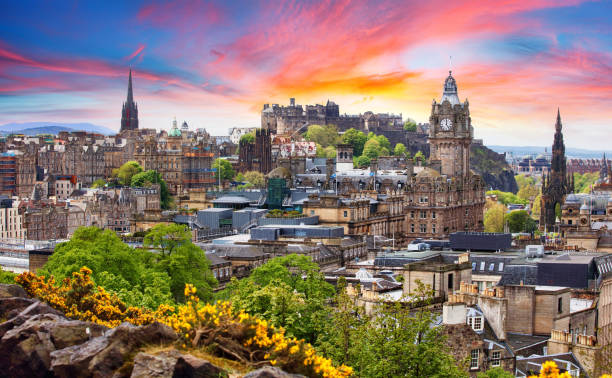
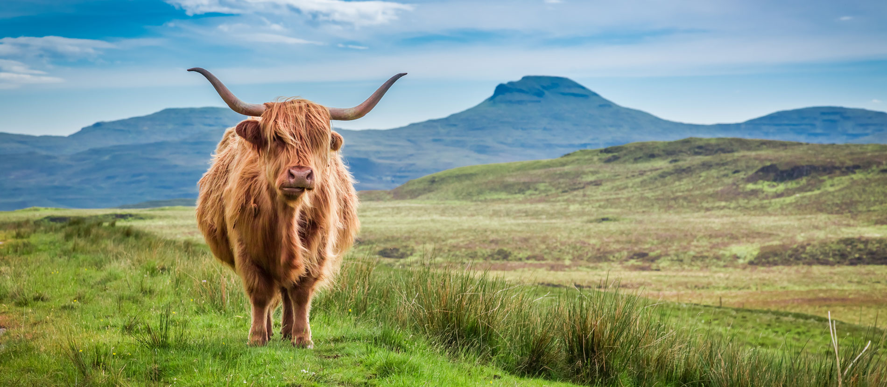
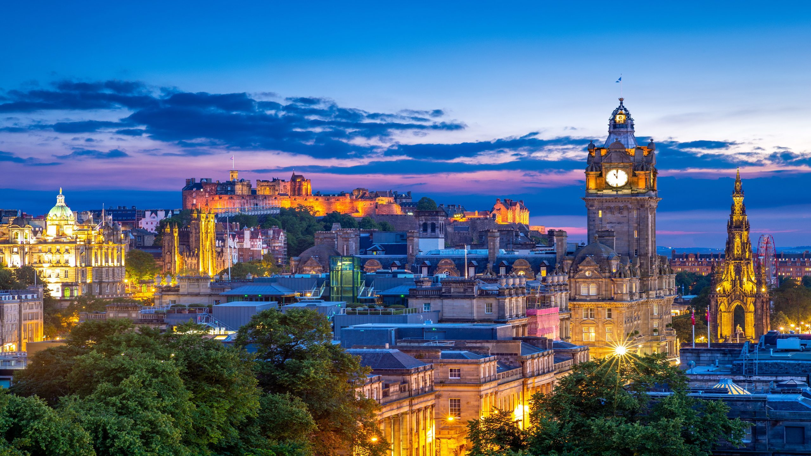
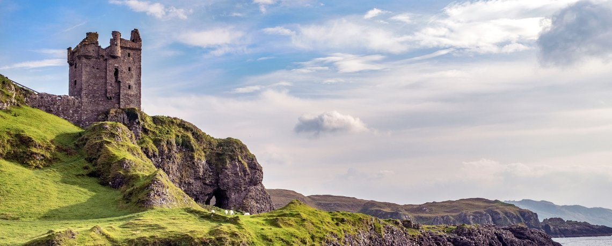
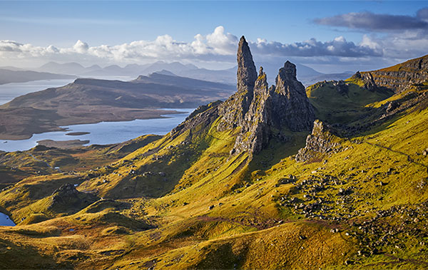
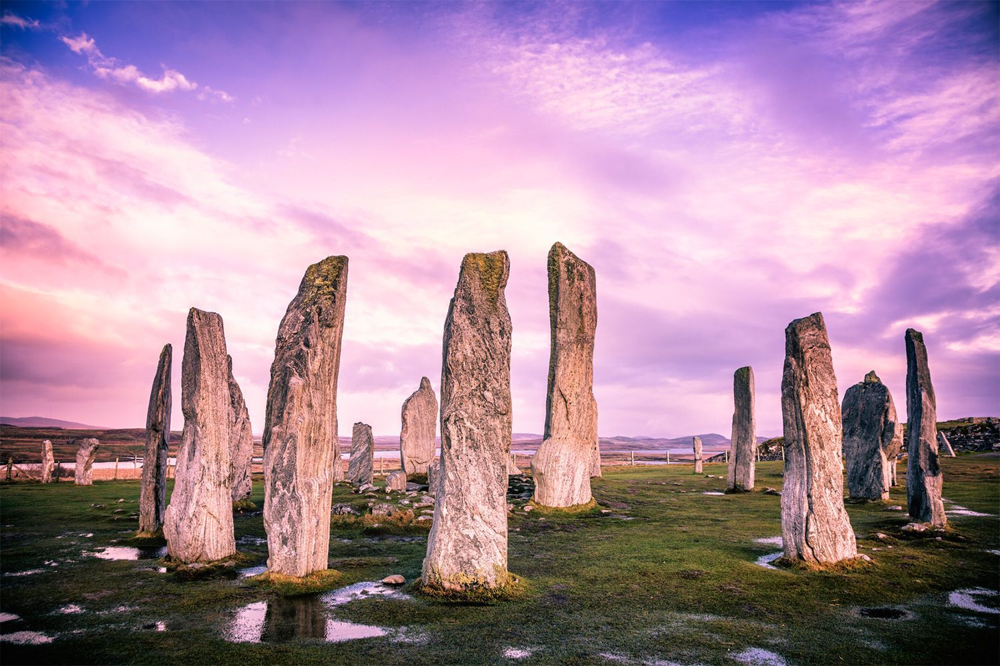
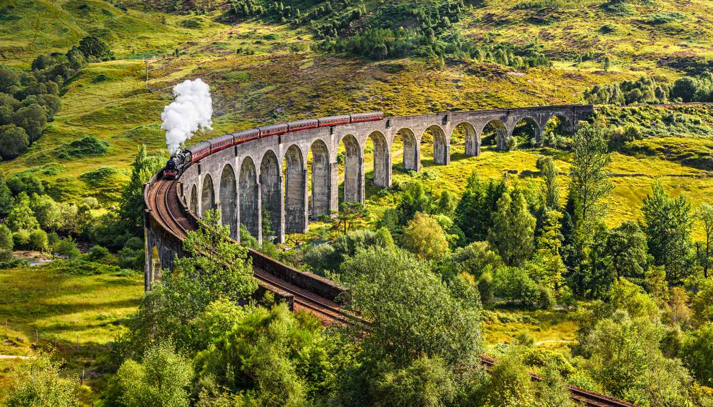
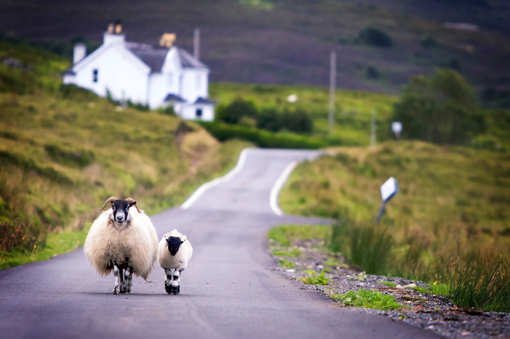

Edinburgh castle, Scotland at sunset

Ahh, the highlands of Scotland. An expanse of nearly 10,000 sq miles steeped in magnificent landscapes, incredible hikes and a long, bloody history. There’s no better place for a real, wild adventure than the highlands of Scotland!

Edinburgh is a city of rich history and refined charm, where cobbled medieval streets and centuries-old castles meet elegant Georgian squares, vibrant festivals, and modern cultural flair. Stroll the Royal Mile, explore the iconic Edinburgh Castle, and browse the shops and galleries of New Town. World-class dining, from cozy pubs to Michelin-starred restaurants, complements the city’s thriving arts and literary scenes. With events like the Edinburgh Festival and Hogmanay, and a city center easily explored on foot, Edinburgh delights history buffs, culture lovers, and curious travelers alike.

The Scottish Highlands epitomize natural beauty with their awe-inspiring landscapes.

From the towering peaks of Ben Nevis to the mysterious Loch Ness, this region showcases a tapestry of mist-covered mountains, shimmering lochs, and cascading waterfalls. Additionally, visiting the enchanting Isle of Skye is like stepping into a fairy tale, with its dramatic cliffs, fairy pools, and iconic rock formations such as the Old Man of Storr.

Predating the likes of Stonehedge are the giant monolithic standing stones of Callanish on the Isle of Lewis, in the Outer Hebrides. The exact reasoning behind their existence remains a mystery however it’s safe to say the stones (that date back to as early as 2900BC) were used as an important ritual activity during the Bronze Age.

Scotland is a treasure trove of magical connections for fans of the iconic Harry Potter series. Visit the picturesque Glenfinnan Viaduct, featured in the movies as the Hogwarts Express route. Explore the historic streets of Edinburgh that inspired J.K. Rowling's wizarding world, with sights like The Elephant House café and Victoria Street. Delve into the wizarding magic and relive the enchantment of the books and films in Scotland.
